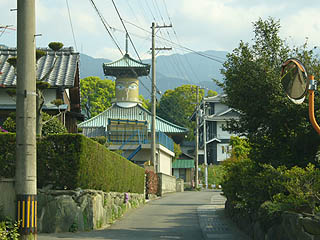
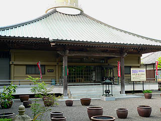
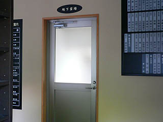
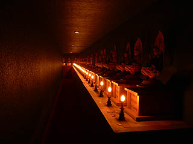
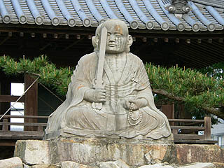

萩生寺/愛媛県新居浜市
愛媛県の新居浜市に萩生寺という寺がある。
このお寺、どこが変わっているかというと・・・

ハイ。一目瞭然ですね。本堂に目玉が付いているんです。
この目玉の事は佛眼というそうな。
遠くから既にこっちを見てる、見・て・る〜！！
目玉の視線から避けるように本堂を回り込んで目玉の逆サイドの駐車場に車を停めて境内に入ると・・・
えええ〜っ！
こっち側にも目玉が付いてました！
この目玉はネパールのボダナートを参照したものなのだろうが、何故にこのバリバリの日本チックな本堂（コンクリですけど）に目玉？
しかも円筒形の目玉の部分の上に乗る屋根も五重塔のてっぺんみたく至って普通の日本建築の屋根組。
まるである日、ネパールから目玉が飛んで来て普通のお寺の本堂に突き刺さったかのような唐突感にあふれている。

こうして下の部分だけ見るとすっごく普通のお寺なんすけど。
さらにこのお寺には地下霊堂があるという。行かねばなるまい。
本堂脇のお城のような立派な建物（信徒会館）の一部に地下霊場はある。
ここのお寺では信徒会館を利用して様々なカルチャーセンターやイベントを開催しているようだ。
で、地下霊場。
何だかどこぞの研修所のお風呂の入口の様でもあるがドアの上には男風呂、じゃなくて地下霊場と記されてあるので間違いはなかろう。

しかし中に入ってビックリ。入口の淡白とは裏腹に意外と本格的な地下霊場だった。
恐らく本堂の真下をまるっと使っているのであろう。順路はロの字型に回っていく。
狭い通路沿いには四国八十八カ所と西国三十三観音の写し本尊がズラリと並んでいる。
何でもルンビニー・ブッダガヤー・サルナート・クシナガラのインド4大聖地の砂、中国西安の青龍寺の砂、日本の西国三十三観音と四国八十八ヶ所の砂が設けられているそうな。
ワールドクラスのありがたさなのである。
回廊には消防法の関係だろうか電気式のロウソクが灯されている。

一分の揺らぎもない薄暗い灯に写し出されたその光景。物音ひとつせず時間が永遠に止まったかのような神々しさだ。
外に出ると山門の前に不思議な石像があった。

剣を持った僧形の石像。
これは秘鍵大師といい文殊の利剣を持っている弘法大師の姿なのだという。
武闘派とはあまり縁がなさそうな弘法大師が剣を持つとは何だか物騒ですね。
この石像は両面大師というそうな。由来は・・・下を見ればわかりますね。
後ろにもぴったり大師さんがくっ付いているんです。
まるでベ・・・あ、別に何でもないです。優しい弘法さんも怒らせると恐いよ、という意味なのだろうか。
マル特珍アイテム3連チャンの割には珍寺特有のマッドな空気はなく、その点は極めて普通のお寺だったりして、何ともつかみ所がないというか、真面目なだけにかえって珍な部分が際立って目立つというか。
きっとあまりにも真面目過ぎるこらこそチト珍方向に向いてしまったのではなかろうか。そんな印象のお寺だった、
公式サイト
2006.5.
珍寺大道場 HOME